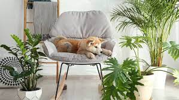

Quem somos nos?
Nos somos uma empresa inovadora dedicada ao universo pet, destacando-se como referência no cuidado e bem-estar dos animais de estimação. Fundada com a missão de proporcionar experiências positivas e saudáveis para os pets e seus tutores, nossa empresa se destaca pela qualidade e variedade de produtos e serviços oferecidos.
Nossa expertise abrange desde alimentos balanceados e acessórios exclusivos até serviços de cuidado e estética, garantindo que cada animal receba a atenção e os cuidados necessários para uma vida plena. Na Petts, acreditamos que a relação entre humanos e animais vai além da convivência e, por isso, investimos constantemente em inovação e tecnologia para aprimorar essa conexão.
Com uma equipe apaixonada por pets e comprometida com a excelência, a Petts busca constantemente superar as expectativas de seus clientes, proporcionando soluções personalizadas e serviços que promovam o bem-estar e a felicidade dos animais. Estamos empenhados em construir não apenas uma empresa, mas uma comunidade onde a paixão pelos animais é o elo que nos une. Seja bem-vindo à Petts, onde cada pet é tratado com carinho e dedicação.
Missão e Visão
A Pett foi fundada com a missão de proporcionar experiências positivas e saudáveis para animais de estimação e seus tutores.
Buscamos ser referência no cuidado e bem-estar dos pets, promovendo uma conexão única entre humanos e animais.
Equipe Apaixonada
Nossa equipe é composta por profissionais apaixonados por pets e comprometidos com a excelência.
Trabalhamos juntos para superar as expectativas dos clientes, proporcionando soluções personalizadas e serviços que promovam o bem-estar e a felicidade dos animais.
Inovação e Tecnologia
Investimos constantemente em inovação e tecnologia para aprimorar a relação entre tutores e pets.
Acreditamos que a conexão vai além da convivência, e buscamos maneiras inovadoras de fortalecer esse vínculo.

Na Pett, o compromisso com o bem-estar animal é uma prioridade. Procuramos não apenas atender às necessidades básicas dos pets, mas também promover um ambiente saudável e feliz para que possam viver plenamente.
Buscamos ser referência no cuidado e bem-estar dos pets, promovendo uma conexão única entre humanos e animais.
Entendemos que cada pet é único, e nosso atendimento é personalizado para atender às necessidades específicas de cada cliente. Buscamos estabelecer uma relação de confiança, garantindo que cada pet receba a atenção e os cuidados necessários.
Além de ser uma empresa, a Pett aspira a ser uma comunidade onde a paixão pelos animais é o elo que nos une. Estamos empenhados em criar um ambiente acolhedor e envolvente para tutores e seus pets, promovendo a troca de experiências e conhecimentos.
Destacamo-nos pela qualidade e diversidade de produtos, incluindo alimentos balanceados, acessórios exclusivos e serviços de cuidado e estética. Oferecemos soluções abrangentes para atender às necessidades específicas de cada animal.
Na Pett, a felicidade e o carinho são valores fundamentais. Acreditamos que cada interação com nossos produtos e serviços deve ser marcada por um toque de afeto, contribuindo para uma vida mais plena e saudável para os animais de estimação e seus tutores.
esponjas marinhas
águas-vivas
felinos
canídeos
roedores noturnos
morcegos
coruja
Quando os gatos querem pedir desculpas, eles podem exibir comportamentos como lamber-se excessivamente,
abaixar as orelhas,
evitar contato visual direto,
esfregar-se em você
ou
se aproximar com cautela.
Acredita-se que a fêmea do louva-a-deus devore o macho após a reprodução devido
a benefícios nutricionais e
para aumentar suas chances de sobrevivência
e
reprodução.
Não.
As galinhas não precisam de um galo para botar ovos.
As galinhas põem ovos regularmente,
independentemente da presença de um galo.
Mas para que os ovos sejam fertilizados e deem origem a pintinhos,
é necessário o acasalamento com um galo.
Para acalmar um cachorro com medo de chuva,
crie um ambiente seguro,
forneça uma área acolhedora e tranquila,
distraia-o com brinquedos ou jogos e
tente gradualmente expô-lo a sons de chuva para ajudar a dessensibilizá-lo.
Consultar um veterinário ou
um treinador de cães também pode ser útil
Os cachorros idosos podem dar voltas pela casa por diversos motivos,
como falta de estímulo mental,
ansiedade,
dor ou desorientação.
É importante observar seu comportamento e,
se necessário,
consultar um veterinário para avaliar
a saúde do animal.
Husky Siberiano,
o Malamute do Alasca,
Pastor de Shetland,
Chow-chow,
Lulu da Pomerânia,
Mastiff e
Golden retriever
Existem várias razões pelas quais um cachorro pode não querer beber água,
como estresse,
doença,
mudanças na rotina ou alimentação.
É importante observar o comportamento do seu cachorro
e consultar um veterinário
se a falta de vontade de beber água persistir por muito tempo.
align="justify" >
Algumas plantas seguras para cachorros incluem
a babosa,
a palmeira-dama,
o lírio da paz,
a violeta africana
e a samambaia.
No entanto, é sempre importante monitorar seu cachorro
e evitar que ele mastigue ou ingira qualquer planta desconhecida,
pois algumas podem ser tóxicas para os animais